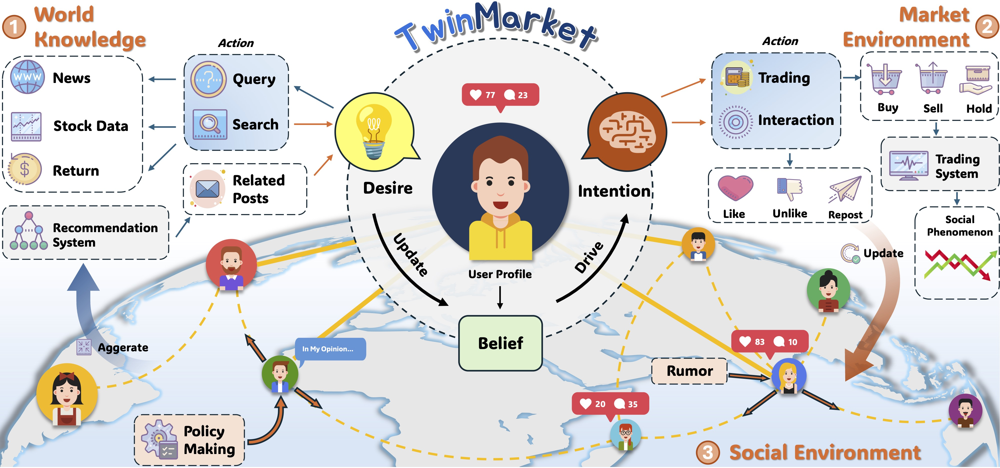
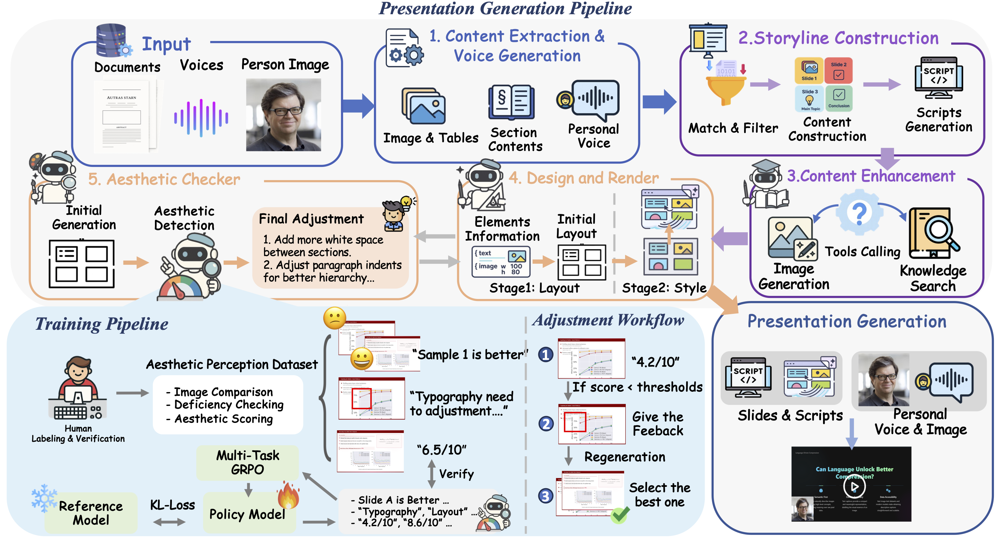
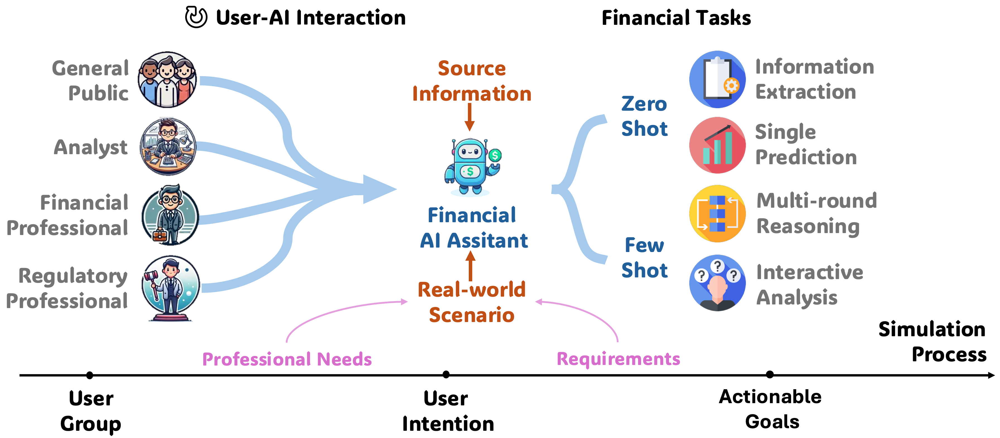
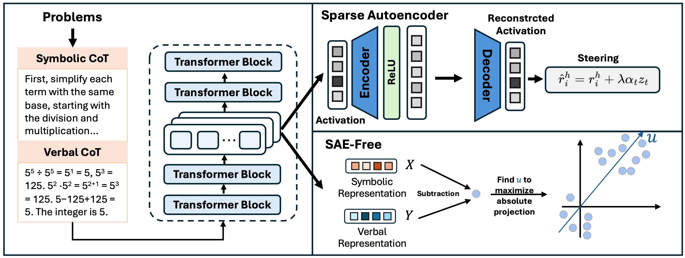
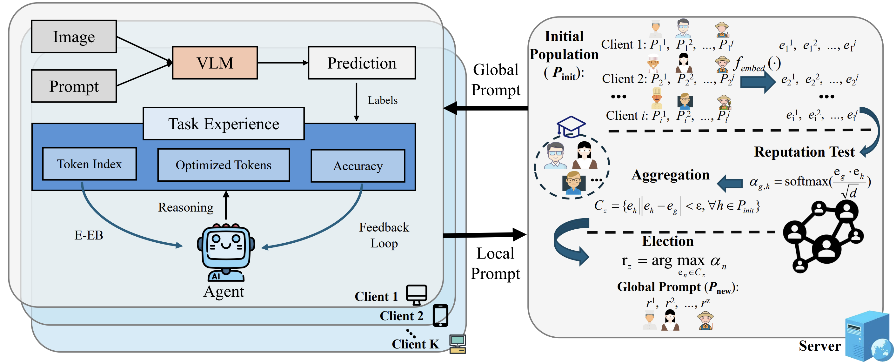
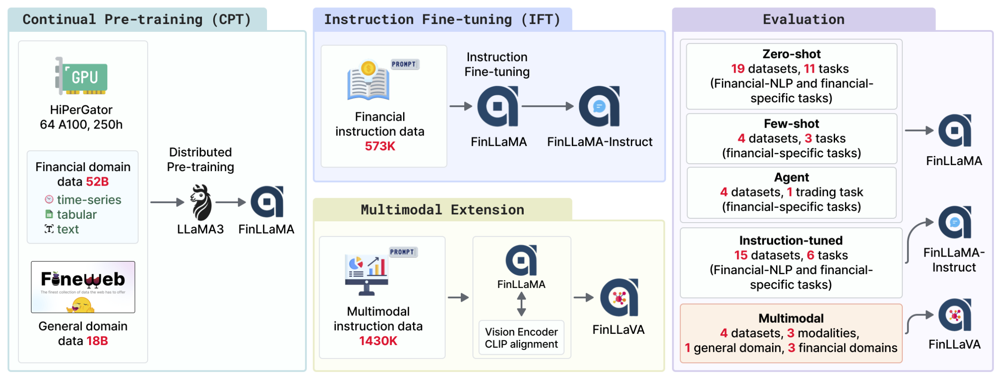
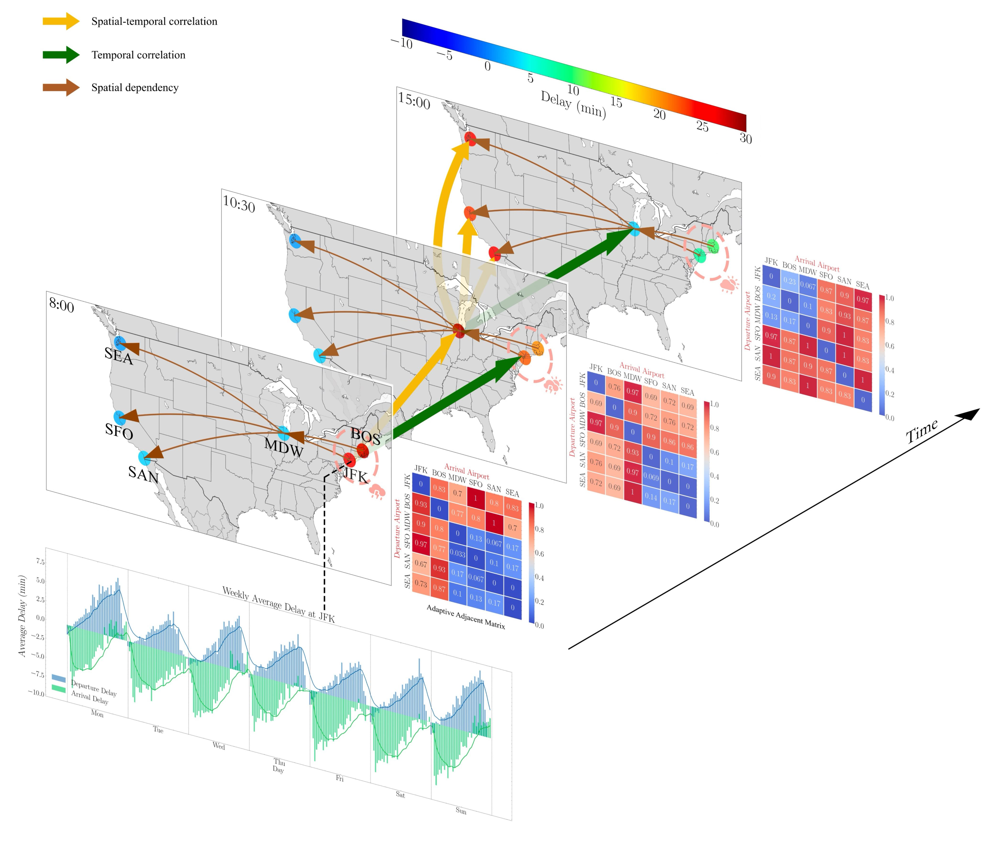
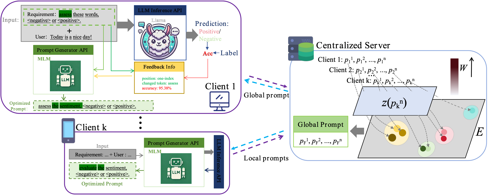

|
Publications
(* indicates equal contribution)
2025
|
|

|
TwinMarket: A Scalable Behavioral and Social Simulation for Financial Markets
Yuzhe Yang*, Yifei Zhang*, Minghao Wu*, Kaidi Zhang, Yunmiao Zhang, Honghai Yu, Yan Hu, Benyou Wang
Proceedings of NeurIPS 2025
Best Paper Award, ICLR 2025 Workshop on Advances in Financial AI
A multi-agent framework that leverages LLMs to simulate socio-economic systems
Paper /
Code /
Project Page
|
|

|
Presenting a Paper is an Art: Self-Improvement Aesthetic Agents for Academic Presentations
Chengzhi Liu*, Yuzhe Yang*, Kaiwen Zhou, Zhen Zhang, Yue Fan, Yannan Xie, Peng Qi, Xin Eric Wang
arXiv preprint 2025
A self-improvement agent generating presentation videos from academic papers
Paper / Code / Project Page
|
|

|
UCFE: A User-Centric Financial Expertise Benchmark for Large Language Models
Yuzhe Yang*, Yifei Zhang*, Yan Hu*, Yilin Guo, Ruoli Gan, Yueru He, Mingcong Lei, Xiao Zhang, Haining Wang, Qianqian Xie, Jimin Huang, Honghai Yu, Benyou Wang
Findings of NAACL 2025
#1 Paper of the day on Huggingface
A User-Centric framework designed to evaluate LLMs' ability to handle complex financial tasks
Paper /
Code /
Dataset
|
|

|
Feature Extraction and Steering for Enhanced Chain-of-Thought Reasoning in Language Models
Zihao Li*, Xu Wang*, Yuzhe Yang, Ziyu Yao, Haoyi Xiong, Mengnan Du
Proceedings of EMNLP 2025
Enhance LLM reasoning by steering activations via a novel SAE-free method using Chain-of-Thought features, without external data
Paper
|

|
OSCAR: Orthogonal Stochastic Control for Alignment-Respecting Diversity in Flow Matching
Jingxuan Wu*, Zhenglin Wan*, Xingrui Yu, Yuzhe Yang, Bo An, Ivor Tsang
arXiv preprint 2025
Training-free diversity enhancement for flow-based text-to-image models via orthogonal stochastic control
Paper /
Code
|
|

|
FDPT: Federated Discrete Prompt Tuning for Black-Box Visual-Language Models
Jiaqi Wu, Simin Chen, Jing Tang, Yuzhe Yang, Yiming Chen, Lixu Wang, Song Lin, Zehua Wang, Wei Chen, Zijian Tian
Proceedings of ICCV 2025
Federated prompt tuning approach for black-box visual-language models
Paper
|
2024
|
|

|
Open-FinLLMs: Open Multimodal Large Language Models for Financial Applications
Jimin Huang, Mengxi Xiao, Dong Li, Zihao Jiang, Yuzhe Yang (lead multimodal training), Yifei Zhang, Lingfei Qian, Yan Wang, Xueqing Peng, Yang Ren, Ruoyu Xiang, Zhengyu Chen, Xiao Zhang, Yueru He, Weiguang Han, Shunian Chen, Lihang Shen, Daniel Kim, Yangyang Yu, Yupeng Cao, Zhiyang Deng, Haohang Li, Duanyu Feng, Yongfu Dai, VijayaSai Somasundaram, Peng Lu, Guojun Xiong, Zhiwei Liu, Zheheng Luo, Zhiyuan Yao, Ruey-Ling Weng, Meikang Qiu, Kaleb E Smith, Honghai Yu, Yanzhao Lai, Min Peng, Jian-Yun Nie, Jordan W. Suchow, Xiao-Yang Liu, Benyou Wang, Alejandro Lopez-Lira, Qianqian Xie, Sophia Ananiadou, Junichi Tsujii
arXiv preprint 2024
First open-source financial multimodal LLM: FinLLaVA-8B
Paper /
Model
|
|

|
FAST-CA: Fusion-based Adaptive Spatial-Temporal Learning with Coupled Attention for airport network delay propagation prediction
Chi Li, Xixian Qi, Yuzhe Yang, Zhuo Zeng, Lianmin Zhang, Jianfeng Mao
Information Fusion 2024
SOTA spatio-temporal model for predicting airport network delay propagation
Paper
|
|

|
FedDTPT: Federated Discrete and Transferable Prompt Tuning for Black-Box Large Language Models
Jiaqi Wu, Simin Chen, Yuzhe Yang, Yijiang Li, Shiyue Hou, Rui Jing, Zehua Wang, Wei Chen, Zijian Tian
arXiv preprint 2024
A federated prompt tuning method for black-box LLMs, enhancing privacy, efficiency, and performance on non-iid data
Paper
|
|
{kind=link}